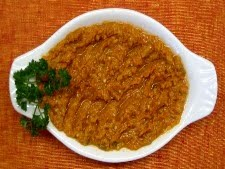

میرزاقاسمی
تاریخچه غذا
میرزا قاسمی یکی از غذاهای اصیل و بسیار محبوب استان گیلان است که به دلیل طعم خوشمزه و خاصی که به خاطر بادمجان کباب شده دارد در تمام شهرهای ایران از محبوبیت بالایی برخوردار است.
مواد لازم
- بادمجان
- گوجه فرنگی
- تخم مرغ
- سیر
- رب گوجه فرنگی
- روغن و زردچوبه
- نمک و فلفل سیاه
طرز تهیه
- برای تهیه میرزا قاسمی مجلسی ابتدا باید بادمجان ها را کباب کنیم ، برای این منظور می توانیم از شعله اجاق گاز یا منقل زغال استفاده کنیم. باید بادمجان ها را به خوبی کباب کنیم به حدی که پوست بادمجان ها به طور کامل بسوزد.
- البته اگر طعم دودی بادمجان کبابی را دوست ندارید می توانید بادمجان ها را به صورت آبپز بپزید. پس از اینکه کباب کردن بادمجان ها به پایان رسید اجازه می دهیم کمی سرد شوند سپسپ پوست شان را به آرامی جدا می کنیم.
- بادمجان ها را پس از اینکه پوست گرفتیم در یک کاسه بزرگ می ریزیم سپس آنها را با گوشتکوب به طور کامل له می کنیم تا بافت شان از هم جدا شود. در ادامه بادمجان ها را کنار می گذاریم و گوجه فرنگی ها را اماده می کنیم.
- گوجه فرنگی ها را به مدت ۵ دقیقه در یک قابلمه حاوی آب جوش قرار می دهیم تا پوست شان به راحتی جدا شود. پس از گذشت ۵ دقیقه گوجه فرنگی ها را از آب جوش خارج می کنیم و پس از اینکه کمی سرد شدند پوستا شان را به راحتی جدا می کنیم.
- یک تابه مناسب روی حرارت قرار می دهیم و مقداری روغن اضافه می کنیم. در ادامه سیرها را رنده می کنیم و در روغن کمی تفت می دهیم تا نرم و سبک شوند ، در ادامه مقداری زردچوبه به سیر اضافه می کنیم و خوب تفت می دهیم تا سیر با زردچوبه یکدست شود.
- در این مرحله بادمجان ها را اضافه می کنیم و حدود ۲۰ دقیقه تفت می دهیم ، سپس گوجه فرنگی ها را به صورت خیلی ریز یا رنده شده به تابه اضافه می کنیم و خوب تفت می دهیم تا آب اضافی گوجه فرنگی ها تبخیر شود و میرزا قاسمی به روغن بیفتد.
- اضافه کردن رب گوجه فرنگی به میرزا قاسمی اختیاری است اما اگر می خواهید میرزا قاسمی طعم و رنگ بهتری داشته باشد می توانید ۱ قاشق غذاخوری رب گوجه فرنگی نیز در این مرحله به میرزا قاسمی اضافه کنید. رب گوجه فرنگی را خوب تفت دهید تا کاملا سرخ شود.
- در این مرحله مواد میرزا قاسمی را یک سمت تابه جمع می کنیم سپس تخم مرغ ها را در قسمت خالی تابه می شکنیم و پس از اینکه به خوبی پختند با دیگر مواد میرزا قاسمی مخلوط می کنیم تا کاملا با دیگر مواد یکدست شوند.
- در آخر نمک و فلفل سیاه میرزا قاسمی را اندازه کنید و اجازه دهید کمی جا بیفتد. برای تزیین میرزا قاسمی می توانید یک عدد تخم مرغ را در یک تابه جداگانه در یک قالب گرد بپزید سپس بعد از اینکه میرزا قاسمی را در بشقاب کشیدید تخم مرغ نیمرو شده را روی میرزا قاسمی قرار دهید.
تره نوش جان